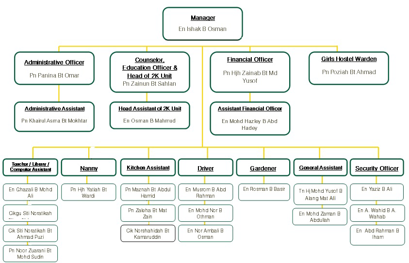
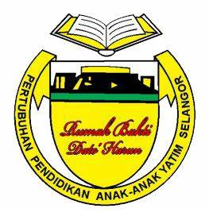

Organization Background
The Committee has moved actively to achieve its goal of its establishment. For the service of Y.Bhg Dato 'Haji Harun Idris and his wife, Y.Bhg Datin Salmah Suleiman, the Selangor State Government has granted a piece of land in Mukim Hulu Kelang (HS.231) with a total area of 4.8 acres according to the PHT.G.2 / 139 / 75. To determine this project can be successfully implemented, Y.Bhg. Dato 'Haji Harun Idris was appointed as the Chairman of this Organization.
RBDH's Organisation
All policy and management RBDH determined by a body known as the Council of Education Association Orphanage Selangor . Member of the Executive Council are appointed from among persons who are members of this Organization . Member of the Executive Council are appointed from among the members of the General Meeting biennally.
{kind=link}
Member of the Executive Council has decided to appoint 23 staffs to manage the affairs of the administration and management of RBDH on daily basis.

{kind=link}
The Meaning of RBDH's Logo

Yellow: Protect an orphans to believe, be grateful and responsible
Green: Children grow up with excellent guidance and achievement
White: Sincerity and cleanliness
Red: Brave and insightful
Black: Disciplined